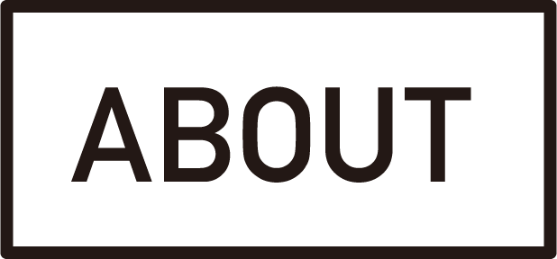

inochi学生フォーラム2018とは
約半年間に及ぶ行動期間を経て、中学生・高校生(約15チーム)・高専生(約3チーム)・大学生、大学院生(約10チーム)が1つの医療課題解決に向けてプランを競い合う課題解決プログラムです。2015年から毎年開催されており、今年で4年目を迎えました。全5回の各業界トップランナーによる教育プログラムの授業と大阪大学・京都大学の医学生を中心とした関西の主要医学生による二人三脚のメンタリングを経て関西から医療課題解決が始まります。プログラムの最後にはグランプリを決定し、優勝チームには賞金15万円が与えられます。
2017年度フォーラムはこちら
2016年度フォーラムはこちら
自殺するのはその人「だけ」のせい？
「死んでしまうことしか解決策が見えない。死ぬしか先が見えない。」
そんな息苦しい社会なんてまっぴらだ。
必ず希望を見つけるんだ。
私たちが立ち上がるんだ。
「死んでたまるか。」
「誰も自分で命を絶たない。絶たせない。」
そんな社会を目指して。
世界で40秒にひとりがその命の灯火を絶ってしまう原因：「自殺」。
日本の15歳から39歳の死因第1位であり、若者の命が刻一刻と失われています。
4人に1人が「本気で自殺したい」と考える「絶望」の国、日本。
若者が「希望」の起点となる解決策を。
テクノロジーとコミュニティの力を信じて、
ヘルスケアの一大問題に立ち向かいます。
各分野のトップランナーからの特別講義を大阪大学・京都大学にて開催
＊大学生・大学院生は原則Web上での受講になります
自殺について、デザイン思考、リーダーシップ等チームでのプラン作成においての基礎を、それぞれ専門とされる先生方からワークショップを通して、一から学ぶことができます。また、テクノロジー、コミュニティー作り、デザインの分野で第一線で活躍されている方とつながることで、皆さんのアイディアを加速させることができます。
大阪大学・京都大学医学部生による二人三脚のサポート体制
大阪大学・京都大学の医学部を中心とした大学生の綿密な指導によって、みなさんのアイディア実現をサポートします。チームの進捗確認、パワーポイントスライドの作成、プレゼンテーションなどにも、一から支援するので安心して参加することができます。会場、登壇者の詳細は下記のスケジュールに記載。
【 中学生・高校生・高専生 限定 】
最先端医療研究施設、最先端技術施設への無料見学チャンス！
昨年まではiPS細胞研究所・理化学研究所を見学。普段なかなか見ることのできない最先端の施設で研究、技術開発に携わる方のお話を聞くことができます。2018年度の見学施設、日時は随時更新！会場、登壇者の詳細は下記のスケジュールに記載。
フォーラム修了生が様々な分野で活躍！
日本を含め、６カ国での参加、開催 / 国内、海外合わせ400人以上の修了生を輩出 / 関西、海外の参加校総数45校 / 50以上の課題解決アイディアの創出 / 全国高校生マイプロジェクトアワード2016 文部科学大臣賞 / 第21回ボランティア・スピリット・アワード受賞(関西ブロック・ブロック賞) / AED 功労賞受賞 / 第2回学生団体総選挙 オールジャンル部門 グラングプリ受賞(2017年) / 京都大学総長賞受賞
-
6/14(木) 中・高・高専生の参加応募締め切り
※大学生・大学院生は 6/21(木)締め切り※参加費無料 ※例年3倍以上の倍率での申し込みとなります。
-
7/2(月) 参加者確定
※大学生・大学院生は 7/4(水)確定参加の可否についてはメールでお伝えいたします。応募者多数の場合、エントリーフォームへの記入内容および面接によって選考いたします。
-
7/8(日)〜11/25（日） inochi Education Program
「自殺」というテーマについて解決策を導き出すための教育プログラム。
※下線が引いてあるイベントは大学生との合同イベントです。-
阪大開催
参加者が一堂に集い、約半年にわたるプログラムが幕を開けます。
-
京大開催
革新的なアイディアを生み出すための思考法について学びます。
-
その他
医療のトップランナーから、専門的な知見と実際の現場に関するインプットを行います。
-
その他
最先端研究施設を見学する貴重な機会！各チームが一堂に集い、アイディアを洗練させていきます。
-
阪大開催
地域を巻き込んで課題解決に挑むための力を身につけます。
-
京大開催
コンペティションに向けて、大学生・大学院生チームも交えた合同のメンタリングの場を設定します。
-
その他
アイディアを実現するための資金を得るチャンス！
-
阪大開催
最先端のテクノロジーを利用して、課題解決に挑むためのヒントを掴みます。
-
その他
最終予選に向けて、現時点でのアイディアを実際にプレゼンテーションします。
-
阪大開催
3ヶ月かけて磨いてきた自分たちのプランを審査員に伝えるためのプレゼンテーションの準備など、最後の追い込みを行います。
-
-
10/21(日) 最終予選
阪大開催
厳選な審査により、最終フォーラムに進出するチームを選出します。中学生・高校生・高専生チームから約3チーム、大学生・大学院生チームから1~2チームがこの最終予選を勝ち抜きます。
11/25(日)
inochi学生・未来フォーラム 2018
グランフロント大阪 北館B２Fコングレコンベンションセンターにて開催！
例年様々な分野の超一流の方を講師としてお呼びしておりますので、自殺対策の面以外でも、工学やデザイン、リーダーシップなど様々な分野を学び、経験できるという観点からも、参加者にとっては千載一遇のチャンスとなります。
私たちが考える以下それぞれの6つのキーワード
WHY
どうして僕たちがヘルスケア・自殺の課題に取り組むのか
HOW TO THINK
どのように考えれば独創的にアイディアを出せるのか
HOW TO EXPAND
どうすれば自分たちのアイディアが周囲の人、たくさんの人に受け入れられるのか
MEDICINE
医療的な側面で自殺を考えてみる
TECH
テクノロジーを駆使した解決策を探る
COMMUNITY
人との繋がりを介した解決策を探る
これらに則して、各分野のトップランナーを招き様々な形式のプログラムを用意しました。プログラムの形式は、レクチャー/グループワーク/プレゼンテーション/イベントなど、多岐に渡ります。
なお、大学生・大学院生は下線を引いてあるイベント以外は原則web講座となります。
2016年度修了生「Wild idea」
inochi学生フォーラムに参加して、仲間と一緒に、一生懸命に何かに取り組む素晴らしさを感じました。熱意や意欲ある、全国そして海外の学生、協力してくださる方、尊敬できる師、おばかなことも真面目なこともいっしょにやれる仲間と、かけがえのない時間を過ごすことができました。
2017年度修了生「たられば」
私たちは、このプロジェクトを通して答えのない問いに全力で向き合うことの大切さや、自発的に行動していく姿勢などを学びました。またこのプロジェクトに参加して共に切磋琢磨できる仲間や支えてくれる大学生の方々、わからないことをわかりやすく教えてくれる専門家の方々とも出会うことができました。


澤 芳樹（理事長）
大阪大学大学院
医学系研究科心臓血管外科
教授
高橋 政代
理化学研究所
網膜再生医療研究開発プロジェクト
プロジェクトリーダー

森尾 友宏
東京医科歯科大学
発生発達病態学分野
教授

中村 雅也
慶應義塾大学医学部
整形外科学教室 教授
鈴木 寛
大阪大学大学院
医学系研究科
招聘教授
寺本 将行
大阪大学
医学部医学科卒
医師